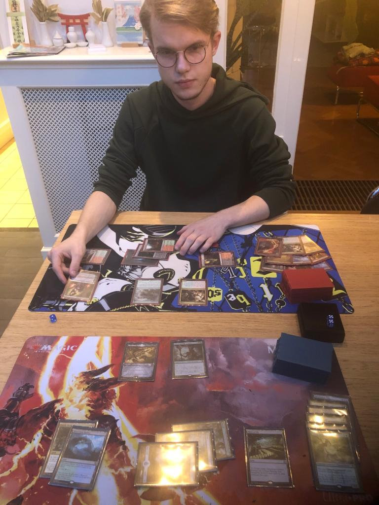

Een van de dingen die ik graag in mijn vrijtijd doe ik naar muziek luisteren. Momenteel ben ik helemaal weg van Yonezu Kenshi (米津玄師), Een Japanse muziekant.
Magic The Gathering is een van mijn favourite bezigheden. Ik ga eigenlijk wel iedere week minstens 3 keer naar de stad per week om het spel te spelen.

Toen ik jong was had ik eigenlijk altijd wel al een facinatie voor Japan en alles wat met Japan te maken heeft. Voor deze reden heb ik mezelf opgeschreven om een international student te zijn op een Japanse highschool en de tijd van mijn leven gehad.